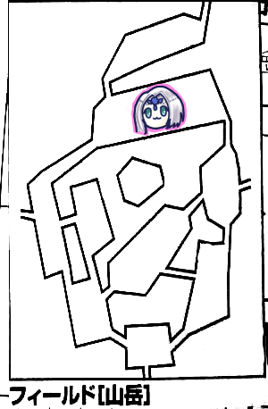
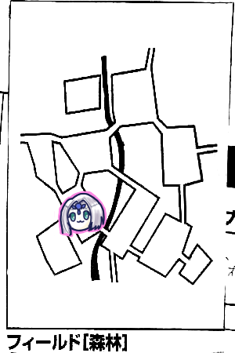
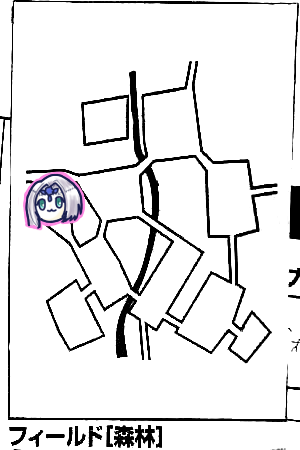
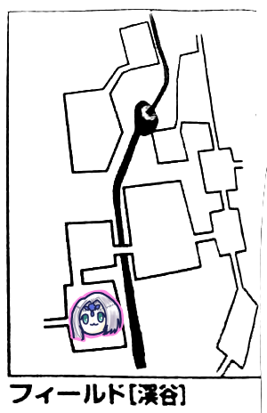

みぞれ「リプレイ再編集してて思ったけど森林全然行ってないね、4年前にプーカのクエスト受けっぱなし。なのでそろそろ行きたいです」
ナナシ「いにしえの記憶」
ナナシ「なんかミッション受けて出かけるか」
現在受けられるミッションはこんな感じ。
・ヒドラの討伐
・魔物の討伐(ランダム地域)
・新米騎士の訓練(ランダム地域)
・マギテック協会の運搬仕事(ランダム地域)
・ライダーズギルドの釣り
「森林狙えるなら討伐に行ってもいいんだけど」
「遭遇数上がるから我々のガバ運では牛歩になる可能性があるよ」
結局ライダーズギルドの釣りミッションを受けて釣りをしつつプーカのクエストをすることになりました。
GM「で、荒れ地行くの？」
ナナシ「山岳という選択肢はないんですか」
みぞれ「わざわざココフォリアに山岳マップ出したのに」
GM「ちょっと意地悪をしたいお年頃なのよ」
まずは山岳へ。

GM「主はいません。ぶっ飛ばしました。ではブルーローズさんからイベントお願いします」
ブルーローズ「1d6！6」
GM「魔物と遭遇しました」
タッシュ「幸先いいねー」
GM「レベルが9.4平均のモンスターです。すごいなー」
アードラーストライカー×2(前衛)
オーガウィザード(後衛)
GM「隊列決めてください」
ピーター「後ろでいいかなー」
みぞれ「ピーターさん前に出なくていいんですか、前回それで貫通魔法撃ってたでしょ」
ピーター「あれMP効率よくないんで今はいっかなーって。あ弱点抜きました」
タッシュ「火で炙るか」
GM「寿司みたいなことを言う」
タッシュ「よーしファイアーボール放り込むぞー」
「お願いしまーす」
GM「素通りしました」
タッシュ「回った、27点」
ピーター「ファイアブラスト前に撃ちまーす」
ブルーローズ「MP12使うけどフォースイクスプロージョン使いたいなーってうずうずしてます」
タッシュ「今使うものじゃない」
ピーター「どうしてもやりたいならひっこみますよ」
ブルーローズ「そう言われたならやろうかな」
みぞれ「ここはブルーローズ先生が後ろ殴りに行くんじゃないんですか」
ブルーローズ「そうでしたわね」
タッシュ「冷静になった、実利よりロマンを取ってたのに」
ナナシ「前回自分の戯曲演奏してたしな」
ブルーローズ「あの大きな舞台を経験したことで大人になったんです」
ピーター「では改めましてファイアブラストをアードラーに」
GM「耐えられなかった」
ピーター「威力10なんで安心してください、18点です」
GM「弱点入れるまでもなく死んでますので大丈夫です」
ブルーローズ「今の私は後ろまで走り込めますのよ！」
みぞれ「靴履いたからね」
ブルーローズ「スフィンクスナレッジとマッスルベア乗せようかな。えい、21」
GM「18回避できず」
ブルーローズ中の人の実娘「(自分の名前)のサイコロー」
ブルーローズ「これはサイコロじゃなくてダイスだよー」
娘「だいすー？」
ナナシ「ネクロノミコンダイスの模様見てかわいーって言ってたよ」
「娘教育されてるな」
ブルーローズ「あ、37点です。もーいっかい！24」
GM「22。惜しい」
ブルーローズ「2回転しました！50点」
GM「はい、オーガウィザード死にました」
ナナシ「天文学的な数字ですよね」
タッシュ「ソードワールドの値じゃない」
剥ぎ取りで宝石が2+5個と七色の羽が手に入りました。
ピーター「宝石宝石！」
ブルーローズ「羽と宝石焼かないように焼いたんだね」
西へ向かいます。

GM「白い悪魔なら連邦の白い悪魔を置きたいところなんですがそういうわけにもいきませんのでね。ナナシお願いします」
ナナシ「5です」
GM「山岳イベントです」
ナナシ「1」
GM「山岳イベントです。ガケ崩れが発生しました。15を目標にして回避してください」
ピーター「ストーンガード使ってもいいですかー」
GM「いいすよ」
ピーター「成功」
GM「ダメージ出すよ。29点」
ピーター「わー。生きてる。残り8点」
ブルーローズ「フォースフィールドをうさちゃんにかけつつ回避ってできますか」
GM「んー、自分の回避を犠牲にするならやっていいです」
ブルーローズ「カバーリングの方がいいか、そっちの方がザイアっぽい」
全員生還しました。ピーターがウィスパーヒールで回復。
ナナシ「探索します。ファンブルしました」
GM「ファンブルしたら問答無用で毒です」
ブルーローズ「キュアポイズン！しゅわしゅわーん」
ナナシ「死ぬところだったぜ」
他の人も探索。
GM「ここまでレミングの歯出ず」
「珍しいないつも歯だらけなのに」
北西へ向かいます。

みぞれ「イベント1です。平和」
「レミングの歯見つけました」
「本日初レミング」
ブルーローズ「このパーティーのBGMってビビッドだよね」
みぞれ「どんな曲だろう」
ブルーローズ「び、び、びびびのびー♪MP2点回復してねー♪」
タッシュ「回復しなさそう」
北へ向かいます。

タッシュ「イベント3です」
GM「山岳イベントです」
タッシュ「5です」
GM「突風が吹く！このままでは崖から落ちる！突風の強さは14！生命抵抗でお願いします」
全員成功。
GM「残念、失敗したら崖の高さは冒険者レベルで決まるので」
「ひえええ」
GM「防護点引けるからタッシュ先生とブルーローズは生きるよ」
タッシュ「何言ってるかわからないです」
北へ向かいます。

ピーター「イベント6です。あーーー」
ナナシ「タッシュ先生ビビッドの2点回復してなくないですか」
タッシュ「あ、そうだった」
ナナシ「お前のビビッドなんか聞きたくないんだよ！」
タッシュ「無尽蔵のMPを保つのに必要だから」
ブルーローズ「無尽蔵(要補充)」
GM「額に赤い宝石のはまった白い生き物がいます」
「カーバンクルでは？」
「カーバンクルは黄色い」
ブルーローズ「あモコナじゃない？モコナ」
タッシュ「それ勝てない」
GM「大きさは家猫ぐらいです」
ブルーローズ「モコナじゃん」
GM「二足歩行の生き物がジャンプで移動してきます。皮膚が透明で内蔵が透けて見えます。全部で4体です」
ピーター「魔物知識判定します。成功」
GM「バルバロステイルズ132ページ」
ブルーローズ「カーバンクルじゃん、合ってた」
GM「もう1匹はボーラーです。こいつが前衛で」
ナナシ「先制失敗したんで施設で振り直します。成功」
ボーラーの「輝く身体」について。
半径30m以内で効果を発揮している各種効果を打ち消すとのこと。
タッシュ「サルみたいにファイアーボール打ち込むしかないのか」
ブルーローズ「言い方！やだなぁファイアーボール投げてくるサル」
GM「効果時間があるものは全部打ち消します。みぞれで言うところのタゲサはOKでキャッツアイはNGです。巫術もダメです。変わった戦法を要求されますね」
タッシュ「とは言ってもファイアーボール打ち込むだけですけどね、全員に撃ちます」
GM「抵抗しました」
タッシュ「16点、の半分で」
ピーター「ファイアジャベリン打ち込みます。ボーラー2体で」
ナナシ「ブルーローズとナナシに？」
ピーター「打ち込もうか？」
GM「ピーターは実は幻獣だったのだ。片方抵抗しました」
ピーター「25点の半減です」
みぞれ「ボーラー2体にグレネード撃ちます。ころころ」
ナナシ「これ低すぎでは？みぞれちゃんマギテレベルいくつだった？」
みぞれ「え？ごめんグレネードランチャー(ライダースキル)で振ったわ。振り直します」
GM「両方抵抗失敗」
みぞれ「19点です、そんなもんかー」
タッシュ「19点は高いです、ブルーローズを基準にしちゃダメ」
ブルーローズ「ボーラーのせいでキャッツアイは入らないんだよね、素殴り(トンファー+魔力撃)でボーラーの削れてない方を殴ります。24」
GM「カーバンクルが時を巻き戻します。振り直せ」
ブルーローズ「下がった。19」
GM「これを回避します。17、おあー」
ブルーローズ「ごつん！33点」
GM「生きてるよー」
ブルーローズ「追加攻撃します！19」
GM「19回避！」
ナナシ「前に出まーす。より削れてる方のボーラーしばくか。デーモンフィンガー入れときます」
GM「デーモンフィンガーは効果一瞬だよね？」
ナナシ「一瞬です。とう！28」」
GM「時は戻さない。16」
ナナシ「回った、28点」
GM「死亡した」
ナナシ「クリティカルレイを切ります。さらば200ガメル。残ったボーラーにレザーリボン挑発攻撃いきます。23」
GM「15」
ナナシ「20点」
GM「賭けに勝った！生き残った！」
GM「ボーラーは燐光の舞を舞おうと思うんだけど…半径30m？これエラッタじゃない？直径60m？そんな戦場存在しねーよ。まあいいや舞います。さよならカーバンクル。21で生命抵抗してください」
全員失敗しました。
GM「17点純エネルギーです。直で受けてください。カーバンクルくんもがんばって抵抗します…失敗しました。直でくらいます」
GM「カーバンクルAは貫く赤光をを撃ちます。対象ブルーローズ。他の人は1d3が3以下で巻き込まれます」
全員巻き込まれました。ボーラーも巻き込まれました。
GM「15点受けてください。あっそうだ、ボーラーは自分の抵抗を時を戻して振り直します。ダメでした。死亡」
「こいつらめっちゃ同士打ちしてんな」
GM「カーバンクルBは前進して、ブルーローズを起点にして貫く赤光を放ちます」
ピーターは外れ、それ以外は当たったが抵抗しました。
GM「18点くらってください」
みぞれ「抵抗してなかったら死んでた」
ピーター「当たってたら死んでた」
GM「燦々たる有様ですね」
ナナシ「貫通これだけ当たるとGM冥利に尽きますね」
タッシュ「これは酷いね」
ナナシ「ボーラー死んだからバフマシマシにできるよ」
みぞれ「あ、そうかもう強化打ち消されないんだ」
ブルーローズ「それじゃスフィンクスナレッジ、マッスルベア入れます」
タッシュ「ブルーローズ先生おこですよ」
ブルーローズ「25！」
GM「21、高めだけど失敗です」
ブルーローズ「38点！追撃！26」
GM「18」
ブルーローズ「37点です！」
GM「カーバンクル1匹沈みました」
タッシュ「えーと、それじゃMP9消費して」
みぞれ「この人さらっと9消費する」
タッシュ「カーバンクルAを狙います。21」
GM「16。ダメでした、ああ時を戻したい」
タッシュ「19点です」
GM「しにました」
ナナシ「リカバリィとジャイアントアームしますね。レザーリボンで残ったカーバンクルに挑発攻撃、クリティカルレイも切っとこうかな。24」
GM「17」
ナナシ「回った！28点」
ピーター「みぞれさん行く？」
みぞれ「スカったら終わりなのでおまかせします。残り7点ですよ」
ピーター「じゃウインドカッター撃ちます。23」
GM「14」
ピーター「18点です」
GM「はい、戦闘終了でーす」
タッシュ「やばかった」
ブルーローズ「恐ろしい戦闘でした」
ピーター「ウィスパーヒール連打したってことで3回分を1判定でやっていいですか」
GM「ダメです1回ずつやってください」
ピーター「じゃ3回判定します。成功。抵抗する人がいなければ全回復です」
自由行動消化して北の森林フィールドへ向かいます。

「久しぶりに森林に来た」
ブルーローズ「イベント2！何も起きない！」
みぞれ「釣りします。2匹釣れました」
GM「みぞれ釣り竿持ってる？」
みぞれ「ミッション受けた時に借りられるんじゃなかったっけ？でも釣り竿(50G)って書いてあるから自前でも持ってるみたい」
西へ移動します。

ナナシ「イベント5です」
GM「森林イベントです」
ナナシ「1です」
GM「茨の茂みに足を踏み入れました。無事に抜けるにはPCの半分が判定に成功する必要があります。目標値16でレンジャー技能+器用度ボーナスで判定お願いします」
みぞれ「レンジャー3人要求とか無茶でしょ、絶対通さないマンやん」
GM「時間を余計に使わせるだけなので大丈夫です」
ナナシ「このレベルでこんなところで足止めくってるのなんかダサいよね、うちらベテランでは」
みぞれ「釣りします。13」
GM「失敗です」
みぞれ「これ失敗なのかー」
ピーター「探索します。ファンブルしました」
北東へ移動します。

GM「ここは深くて暗い森です」
みぞれ「タッシュ先生が光れば問題ないな。イベント6です。う…」
ブルーローズ「ここでタッシュ先生戦ったんだっけ、聖地にしたいね」
ナナシ「タッシュここに没す」
タッシュ「いやいやいや殺さないで」
GM「馬に乗った頭部がドクロの騎士が1人」
ナナシ「やばいやつじゃん、めっちゃボスじゃん」
GM「その騎士にタンデムするように青白い姿の女性が1人。…かつ」
タッシュ「かつ？」
GM「濃い黒色の霧から腕が出ているものが2体です」
騎士はボーンナイト、タンデム女性はバンシー、腕はブランクでした。
GM「バンシーは後ろだな」
タッシュ「タンデムしてるんじゃないの」
GM「演出ですので」
と言いつつナイトを後ろに配置するGM。
タッシュ「ナイト後ろなの」
GM「移動速度高いからすぐ前に上がれるし」
タッシュ「そうじゃなくて」
ブルーローズ「騎士の風上にも置けない」
みぞれ「バンシー純エネルギーが弱点か。タゲサレーザーバレットでバンシー撃ちます。射撃久しぶりすぎてわけわからんぞ。えーと…諸々込みで23」
GM「16」
みぞれ「21点です」
タッシュ「後ろ2体にエネルギージャベリン撃ってみるか。19」
GM「バンシーとボーンナイトね。ボーンナイトはどっち狙うの？」
タッシュ「あっそいつ2部位か…」
GM「馬と本体両方狙うって手もあるよ」
タッシュ「それはないです」
本体狙うのかなと思ったけど記録見るとこの時馬を狙ったみたいです。記録ミスなのか何なのか。
GM「両方抵抗成功しました」
タッシュ「18点ダメージです」
ピーター「ファイアジャベリンを後ろ3体(=ボーンナイト2部位+バンシー)に撃ちます。21」
GM「馬のみ抵抗しました」
ピーター「25点！」
GM「バンシー落ちました」
ピーター「ナナシ本体殴ります？」
ナナシ「バンシー殴るつもりだったんだけど本体行きます」
ピーター「じゃ本体にパラミス撃っておきます」
ナナシ「殺す気概でいく。スフィンクスナレッジ、デーモンフィンガーでクリティカルレイも切ります。でボーンナイト本体を狙います。22」
GM「攻撃阻害、パラミス入れて16」
ナナシ「1回転27点！2回目行きます。クリティカルレイ抜きかー、ふぁんぼー！今日2回目」
ブルーローズ「クリティカルレイ使ってない方でよかったね」
ブルーローズ「前にいるブランクは通常攻撃無効なんですよね。ゴッドフィスト使えるかな」
ナナシ「神の拳がナナシを襲う可能性が」
ブルーローズ「あっそうか」
タッシュ「セイクリッドウェポンでいいんじゃないかな」
ブルーローズ「前の2体にフォースエクスプロージョン使うのはありかな」
GM「移動しないといけないからね」
ナナシ「いやナイトメアなんですよ彼女は、今まで言ってなかったけど」
ブルーローズ「イクソシズムって通れば8レベル以下のアンデッドを消滅させるのがあるんだけど」
ナナシ「いいじゃん」
ブルーローズ「ちょっと神官ぽいことをやってみようかと」
ナナシ「お前神官だったのか」
ピーター「あー！外典の効果使うの忘れてた！」
みぞれ「そんなんあったな」
ブルーローズ「異貌化して移動してブランクにスフィンクスノレッジ使います。イクソシズム！19」
みぞれ「神官行為判定がじわじわくる」
ブルーローズ「神官ぽいことをするための判定なので」
GM「失敗した、ブルーローズの魔法は消滅します」
GM「えっとー、ブランクAは殴ろう。金属鎧は装備してないよね。19」
ブルーローズ「えっと攻撃通らないけどカウンターします」
GM「うーん、通します、通らないのにってのもおかしいけど」
ブルーローズ「26」
GM「これ魔力撃入ってるよね？振り直しお願いします」
ブルーローズ「あっそうだった、22」
GM「回避されちゃいました」
GM「ブランクBはナナシを攻撃します。15」
ナナシ「25。ブレードします」
GM「ブレードは入りません」
ナナシ「あ通常武器無効か」
GM「ボーンナイトは懐から人形を出して突き刺して遊ぼうかと思ったんだけどレベルが足りないわ」
ブルーローズ「呪いの人形を出すわ後衛に陣取るわほんと騎士としておかしいわ」
GM「8レベル操霊魔法クリメイション！14」
ナナシ「26抵抗」
GM「半分にして8点です」
ナナシ「せんせーバフちょうだいよぉ」
タッシュ「悩んでるんだよねー、ブランクが炎弱点なんだよね。ダメージアップでいいんだよね？」
ナナシ「はい」
タッシュ「じゃファイアウェポンにしようか」
GM「ファイアボールでいいんじゃない？」
「ん？」
「ん？」
タッシュ「ブルーローズとナナシにかけます。はい成功(1ゾロ)」
GM「いやいやいや」
タッシュ「うそやーん」
ナナシ「タッシュ先生の特性を忘れてたわ」
ブルーローズ「イクソシズム撃ちます。17、低い」
GM「20抵抗」
ピーター「ファイアジャベリンをボーンナイトの本体に撃ちます」
GM「抵抗失敗」
ピーター「27点！」
GM「死んだ」
なんかこの後ナナシが前衛に戻ってきてラスト1匹になるまで普通にブランク殴ったり避けたりしてたんですが、エンチャント失敗してることが忘れ去られていたのかナナシが自前で何とかしたのかよくわかんないです。戦闘中色々メモってるとよくわからなくなるんですよね…みぞれ(自分)のターンの記述が見当たらないのでナナシにエンチャントかけたのをメモし忘れてるのが一番現実的でしょうか。
ブルーローズ「ラストブランク行きます！」
タッシュ「エンチャントいる？」
みぞれ「エンチャントいる？」
ナナシ「こいつらエンチャントかけたがる」
結局タッシュがブルーローズにエンチャントかけました。
ブルーローズ「トンファー魔力撃！」
GM「避けられない」
ブルーローズ「34点、追撃行きます！」
GM「それも避けられないです」
ブルーローズ「仲間と同じところに送ってあげるわ！33点！」
ナナシ「同じところに行けるのかな」
GM「はい戦闘終了です」
みぞれ「ここって魚釣れます？」
GM「釣れます」
みぞれ「なら魔香草炊こうかと思ったけど釣りするかー」
「エリア反復横跳びで回復すればいいんじゃないの」
GM「それをやる場合は本来のエターナルのルールに戻します。つまり5、6で敵が出るようになります」
みぞれ「フィールド移動してMP回復するって話じゃないの」
GM「それならOKです」
ナナシ「森の西のフィールドって行ける？」
みぞれ「行けるよ、未知のフィールドだけど」
ナナシ「なんかそのフィールドってブロックされてて行けなかった記憶あるんだよね」
みぞれ「ここ湖畔の北なんだけど、そこへの未知が続くエリアって確かまだ行ったことないんだよね。でもなんか制限があってフィールド移動できないのは記憶あるな。なんだろう…」
西へ移動します。

GM「ここは鬱蒼とした森です」
「うっそーーー」
GM「誰だ今の」
ブルーローズ「みぞれちゃんでしょ」
みぞれ「えー違いますよー」
GM「そういうことにしておきましょうか」
みぞれ「えまじで私じゃないんだけど」
ブルーローズ「ナナシでしょ」
ナナシ「なすりつけようとしている」
「西へ移動して森の左のフィールドへ行ってみましょうか」
GM「西へは行けません」
「まじかー」
「じゃプーカクエスト消化しに行くか」
東へ戻ります。
ピーター「イベント4です」
GM「森林イベントです」
ピーター「2です」
GM「君たちのいる場所は茂みになっていて、足元がぐずついています。吸血の茨です。危険感知を19目標にお願いします」
ナナシとピーターが成功しました。
GM「失敗した人は9点ダメージ受けてください」
北東へ移動します。
GM「西側に川があり、その向こうに洞窟があります」
ブルーローズ「イベント1です。平和」
GM「川の向こうに渡るには泳ぐ必要があります。エリア移動で渡れるのはそこが浅瀬だからです」
ピーター「いつもの豆は使えますでしょうか」
GM「使えますね、長さが足りれば。20mなら使えますね。判定なしでOKです」
ピーター「MP1点減らして、伸びました」
渡りました。
GM「岸には切り立った崖があり洞窟があります。暗いです」
みぞれ「タッシュ先生ー」
タッシュ「光りました」
GM「洞窟に入りましたね。危険感知してください。…全員成功ですね。足切りは9です。骨が散乱しており魔物に荒らされた跡があります。ドレイクらしき骨もあります」
ブルーローズ「ダメなら逃げればいいよね！ごめんプーカ！」
GM「大きな蛇が2体襲いかかってきます」
ピーター「魔物知識判定成功です」
GM「6レベルモンスターヒュプノパイソンが2体です」
「あれ？」
「6レベル？」
「我々は強くなりすぎたんだ」
GM「よかったね、こいつら両方ともカケラ入ってるよ」
みぞれ「本日初の楽なモンスターだ」
タッシュ「安心してやれますね」
「こいつ催眠模様っての持ってるな。模様を直視すると眠ってしまう。直視しないように戦うと命中回避に2ペナ。接触以外の1体射撃魔法は使えない…と」
「精神抵抗力／消滅ってあるから直視しても精神抵抗すればいいってことかな」
タッシュ「じゃ素直にファイアボールを2体に撃ちます。まず精神抵抗して成功したら魔法行使でいいかな？」
GM「いいよ」
タッシュ「はい抵抗成功。ファイアボールは21」
GM「両方失敗」
タッシュ「18点ダメージです」
GM「えーと75点から18を引いて」
ナナシ「73では？」
みぞれ「73だよね」
タッシュ「おっとエラッタだ」
GM「君たちの方が版が新しかったよね、ならそれで」
ピーター「ファイアブラスト撃ちますか」
GM「射撃魔法ですね。それじゃがっつり見てもらって」
ピーター「あ、ファイアストームにします」
GM「ファイアストームは…エリア攻撃なのか」
ピーター「25」
GM「両方失敗しました」
ピーター「2回転44点です」
ナナシ「しょんなー」
GM「洞窟内にこだまする蛇の焦げた声。それ外典乗っかってる？」
ピーター「あっ乗ってないです。2点足しといてください」
ナナシ「まだ減るんか」
GM「かけらなかったら即死だよこれ」
みぞれ「残り9点、これもうチアでいいよね」
GM「こいつ結構強いんだけどねー、別セッションで1体だけでパーティー全滅させたことあるんだけど」
ナナシ「パイソンガン見します」
GM「クリティカル」
ナナシ「5,6、ぐぅ」
ピーター「あっ寝た、みぞれちゃんこいつごと焼いちゃっていいよ」
みぞれ「チアのつもりだったのに、じゃ焼くかぁ」
ナナシ「フォースエクスプロージョンでもいいよ」
ブルーローズ「お？やるかぁ。じゃナナシ見てますね。寝るなァ！20」
GM「ヒュプノ… パイソン16失敗。ヒュプノシスパイソンって言いそうになる」
ナナシ「何ディビジョン？」
GM「ソードワールドディビジョン」
ナナシ「21、抵抗しました」
ブルーローズ「くっそ」
ナナシ「今くそって」
ブルーローズ「19点ダメージです」
GM「消し飛びました」
ナナシ「はっ…俺は何を、確か蛇に突っ込んでそこからの記憶がない」
洞窟を抜けて西へ。
GM「鬱蒼とした森ですが十分な隙間があるので気分がよく爽やかに過ごせます。周囲は静まり返っており清浄な空気に満ちています」
みぞれ「イベント4です」
GM「森林イベントです」
みぞれ「3です」
GM「猛毒の植物が潜んでいる！達成値20で危険感知判定してください」
みぞれ「また高い値を」
ピーターとナナシが成功しました。
GM「失敗した人はちくりとします。1点の毒属性ダメージを受けます。効くんだっけ？」
みぞれ「タッシュ先生は効かないのでは？」
タッシュ「毒、病気属性の影響は受けません」
GM「ではタッシュ先生以外は出血毒です」
みぞれ「これ解析しないとダメなやつでしたっけ」
GM「あっ出血毒って言っちゃった、見識判定してください」
ピーター「はーい、21」
GM「はい、出血毒で間違いありません」
みぞれ「ぶ、ブルーローズ先生」
ブルーローズ「はい！ブルーローズがキュアポイズンします！3点払ってまずみぞれちゃんの回復をします。15」
GM「15で解除なのでぴったりです」
みぞれ「あぶな」
ブルーローズ「自分にもかけます。20、毒解除！」
みぞれ「魔香草使います？ブルーローズ」
ブルーローズ「いや、いいかなー、無駄遣いしなければいいし」
みぞれ「さっき無駄遣いした人がなんか言ってる」
ナナシ「無駄遣いしないってフリだよね」
GM「このエリアは豊かなので探索結果を1日1回だけ反転させることができます」
「反転してもなー」
みぞれ「探索します。[2,5]」
ナナシ「探索します。[6,2]」
ピーター「探索します。[1,6]」
プーカのところへ向かいます。東へ戻ります。
タッシュ「イベント3です」
GM「森林イベントです」
タッシュ「6です」
GM「辺りが深い霧に包まれます。この霧が出ている間は追加ダメージ+2点で呪い属性です。霧は1d6=2時間続きます。更に探索、危険感知、罠感知に2ペナつきます」
ナナシ「種族特性で呪い3点軽減なんですけどそれ効かないってことでいいですかね」
GM「OKです」
「つよい」
ナナシ「自由行動中に練技って使えますか？リカバリィしたいです」
GM「使っていいことにします」
南東へ移動します。

ピーター「イベント2、平和！」
南へ移動します。

GM「ここは暗くてじめじめしています」
ナナシ「イベント5です」
GM「ノームイベントです」
ナナシ「ノーム？6です」
GM「流血の霧ワンモアセッ！霧が1d6=3時間延長しました」
南東へ移動します。
GM「小さな泉です。君たちが近づくとプーカが出てくきます。ミッション始まりの頃に出会ったリモです」
みぞれ「そんな名前だったんだ」
ナナシ「4年ぶりだねー」
リモ「ゲーム中ではそんなに経ってないけどね！1ヶ月ぶりぐらいかな！」
みぞれ「メタい」
ナナシ「1ヶ月なんだ」
GM「いや半年ぐらいかな？まあそれはおいといて」
ナナシ「例の大蛇倒しておきましたよ、余裕でした」
リモ「うわーありがとう！」
GM「プーカの薬草在庫に+30点されました」
みぞれ「なんですかそれ、全く記憶にありません」
GM「プーカは在庫がある限り善意で薬草類をくれます。救命草、魔香草、世界樹の小さな実がもらえます。」
ナナシ「世界樹の小さな実、MP30点回復だって、これはもらうしかない」
GM「主動作だけど戦闘中に食べれますよ。今在庫点数は55です。救命草1点、魔香草4点、世界樹の小さな実は50点です」
みぞれ「1個もらえるじゃん」
GM「あっ間違えた200点でした」
リモ「もしかしたら持ってるかもしれないけど、ラプロアの実って持ってないかな？」
ナナシ「持ってるわ、めっちゃおいしいってメモってある」
GM「ラプロアの実3個で在庫値が25点増え、星を1つ獲得します」
リモ「これは繰り返し可能なクエストなんだけど」
みぞれ「だからメタい」
ナナシ「よかろう、ちょうど6個あるから2セット渡そう」
25+30+25*2=105点になりました。
釣り場を求めて渓谷へ向かうことになりました。ひとまず北西へ。
西へ移動します。
ブルーローズ「イベント2！なにもない！」
ナナシ「フィールドまたいだらMP回復するからウィスパーヒールお願いします」
ピーター「はーい」
北へ移動します。
みぞれ「イベント5です」
GM「森林イベントです」
みぞれ「5です」
GM「鮮やかなキノコが生えている！胞子が浮いていて光っています」
ピーター「タッシュ先生全部食べておいてください」
タッシュ「撤去するには広すぎるんじゃない」
GM「17を目標に生命抵抗してください」
ピーター「肺に入った」
ブルーローズ「ピーターがキノコになっちゃう」
GM「ピーターを地獄に落とします。ころころ、3、ピーターさんですね、酷く身体が弱ります。筋力の値が6点低下します。この効果は累積して0になると死亡します。ピーター筋力いくつですか」
ピーター「8です」
「あぶねぇ！」
GM「キュアディジーズで治せます」
ブルーローズ「キュアキュアしますか。15」
みぞれ「あ、これ対抗ですか」
GM「対抗です。15では治せません」
ブルーローズ「ピーターの命がかかってますからね。17、ギリギリ！」
ピーター「わーい元気になったよ！」
みぞれ「探索します。[2,3]」
ナナシ「探索します。[3.2]。なんだこれ。乱数って時間生成？」
渓谷へ移動します。

GM「ここはまだ主がいますので、ブルーローズさん主判定お願いします」
ブルーローズ「6、うわあああああ」
GM「イベントみぞれお願いします、あ、みぞれはやったのか」
みぞれ「さっきやってキノコ祭になりました」
GM「タッシュ先生お願いします」
タッシュ「1です」
GM「渓谷イベントです」
1って平和じゃなかったかな…記載ミスですかね。
タッシュ「5です」
GM「大きなキノコを発見しました」
「またキノコ」
GM「胞子は出していません。見識判定ができます」
ピーター「えーい！20」
GM「これはヘビキノコです」
「あー」
「持ってると主が追いかけてくるんだよね」
GM「ある個数以上持っていると蛇をおびき寄せることができます」
「ぽいしなさい、ぽい」

ピーター「イベント1でーす」
みぞれ「じゃ釣りしますかー」
GM「ここは釣りできないんですよ、崖になっているので。さっきは船着き場から行けたので釣りできたんですね」
ナナシ「探索成功しました」
GM「七色バチの蜜を2d6手に入れます」
ナナシ「2個」
タッシュ「そういうこともあるか」

ブルーローズ「イベント1！今日は平和が多いですわね！」
ここも釣りはできないみたいです。
ナナシ「時間もないしこのまま森林に戻って釣りしよう」
ブルーローズ「やることないのでサモンスモールアニマル歌いまーす」
ナナシ「イベント2です」
みぞれ「イベント2です」
森林へ戻ります。
タッシュ「イベント2です」
「まじで平和続くね」
ピーター「イベント1です」
みぞれ「釣りまーす。1匹釣れました」
ブルーローズ「イベント1です」
みぞれ「釣りまーす。ぐぬぅまた1匹」
ナナシ「イベント4です」
GM「森林イベントです」
ナナシ「6です」
GM「薬草師と出会います。救命草魔香草を定価で売ってくれます。薬草師は『森のめぐみというミッションを受けていたら俺のことを思い出してくれ』と言います。あと探索判定のコツを教えてもらえました。次の探索判定の片方を6にできます」
みぞれ「釣りまーす。1匹。一応これでミッション達成」
フィールド移動します。
GM「ミッション達成しているのでこれで村に戻れますよ」
セズウィック村
各種精算を行いました。
フィッシュボールは3個目です。
GM「防衛ポイントが3点上昇しました」
「また防衛か」
GM「防衛ポイントいくつになりましたか」
ピーター「57点になりました」
GM「9レベルモンスターを6匹殺せます」
「つよい」